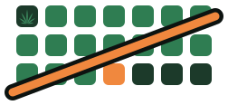
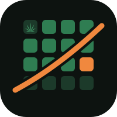

Ton suivi, jour après jour.
jours sans consommation
Tu n'as rien à noter pour l'instant. Mais ces quelques jours ne sont pas du temps mort : c'est là que l'arrêt se prépare.
Conseils tirés de Stop-Cannabis.ch.
Comment s'est passée ta journée ?
Les 4 dernières semaines. Touche un carré pour voir la journée. La couleur suit le moment le plus dur de la journée : vert si tout a été facile, ambre si moyen, rouge s'il y a eu un moment difficile, brique si tu as craqué.
Ton carnet se remplira à partir de ton jour zéro.
Repères issus de Stop-Cannabis.ch. Chacun vit l'arrêt à sa manière : ce sont des ordres de grandeur, pas une règle.
Conseils adaptés de Stop-Cannabis.ch et de Drogues Info Service.
Tout s'enregistre tout seul : il n'y a rien à valider.
Un rappel quotidien pour venir noter ta journée. Il faut que Jour Zéro soit installé sur ton écran d'accueil — c'est le cas.
Réservé à la mise en place du serveur de rappels.
Tes données ne vivent que dans ce navigateur. Il n'y a pas de compte, donc personne ne peut te les rendre si tu les perds.
1 Pour les mettre à l'abri, touche Exporter : un code apparaît dans le cadre. Copie-le et envoie-le-toi par message ou par mail.
2 Pour les remettre ici — nouveau téléphone, ou passage du Mac au mobile — colle ce code dans le cadre et touche Importer.
Première étape
Pose Jour Zéro sur ton écran d'accueil.

Jour Zéro.
Un compteur, un carnet, des repères.
Rien d'autre.
Tes jours se comptent tout seuls. Et l'argent que tu ne dépenses plus.
Quand l'envie monte, tu as un bouton. Il te donne quoi faire, maintenant.
Tu dis comment ça va. Facile, moyen, difficile. Une touche.
Si tu craques, tu le notes. Le compteur repart, sans reproche.
Jour Zéro finit par te connaître. Il repère à quelle heure c'est dur, et te prévient avant.
Quatre écrans, pas un. Glisse du doigt, ou touche la barre du bas.
Pas de compte, aucun serveur. Tout reste sur cet appareil.
Jour Zéro ne remplace pas un soignant. Pour en parler : Stop-Cannabis.ch.
Quelques questions pour personnaliser ton suivi.
Deux rappels par jour : un le matin pour lancer la journée, un le soir pour la noter.
C'est souvent ce qui fait la différence entre une app qu'on ouvre trois jours et une app qui sert vraiment.
Tu peux changer les heures, ou n'en garder qu'un seul, dans les réglages.